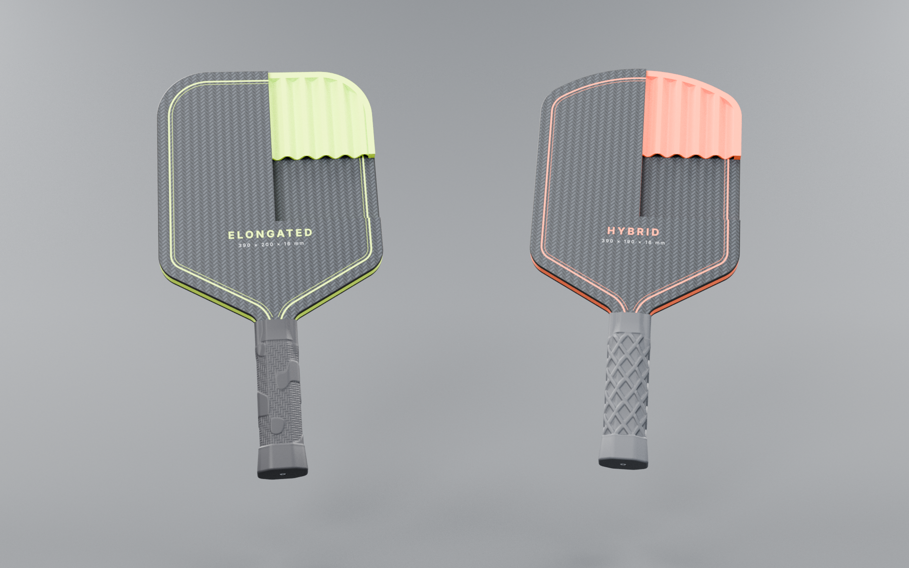
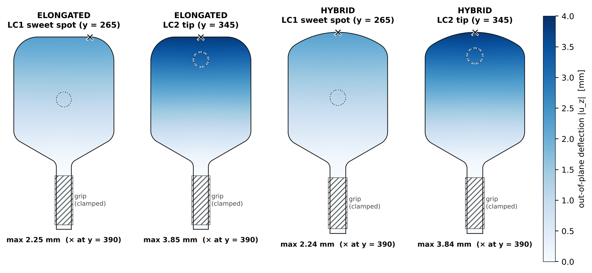
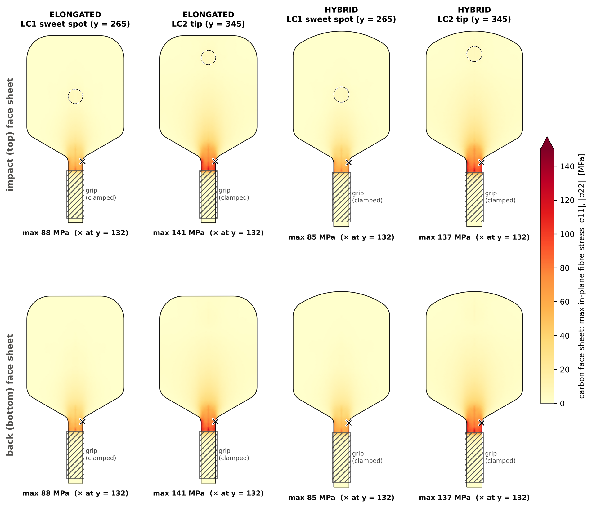
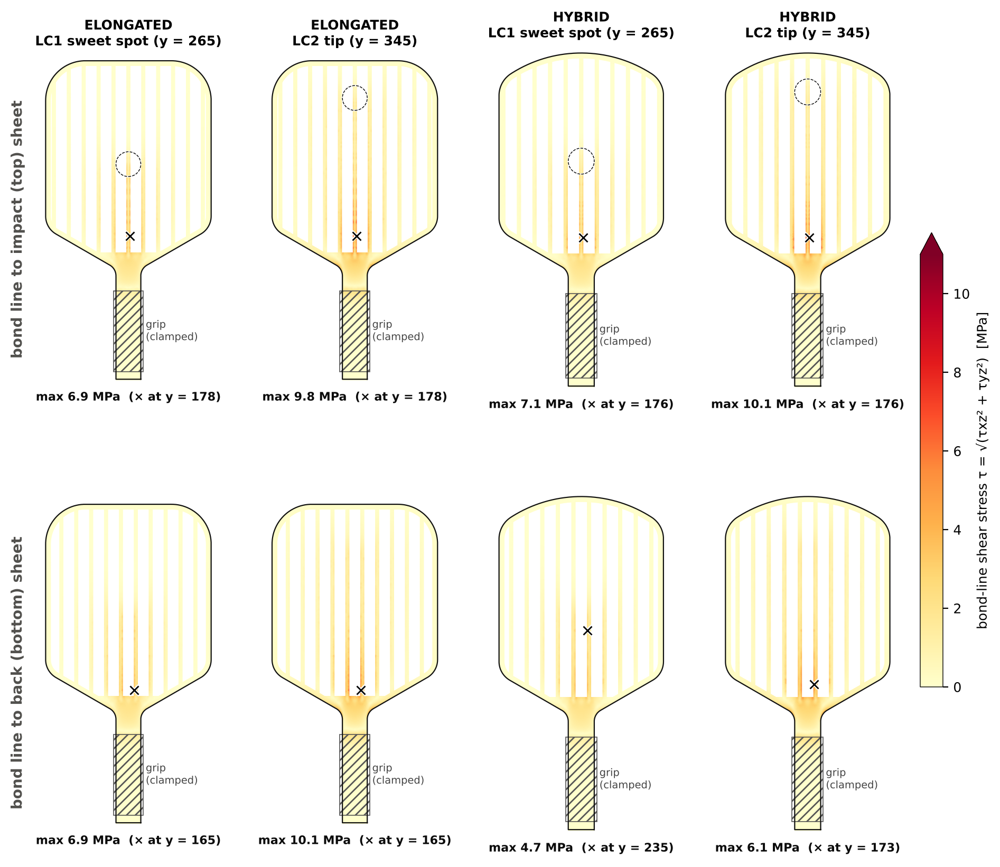
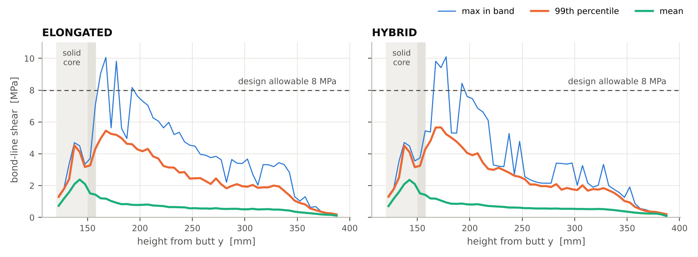
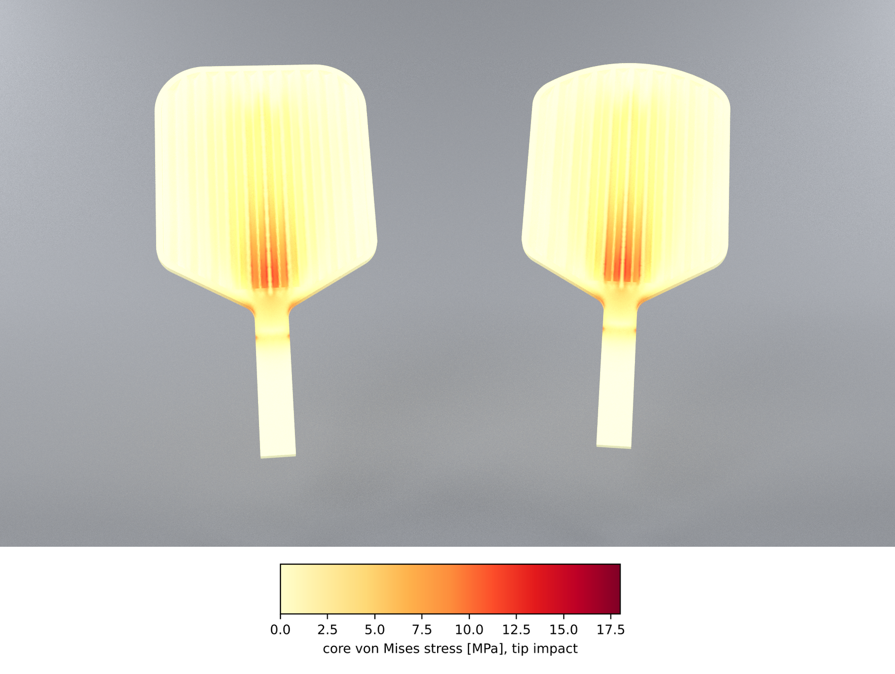

PB-EL-001 Elongated (390 × 200 × 16 mm) and PB-HY-001 Hybrid (390 × 190 × 16 mm).
Linear static and modal finite-element analysis.
1 Summary
Both paddles were analysed as a 4 mm carbon / 8 mm printed wave-rib / 4 mm carbon
sandwich. Each was held at the grip and loaded by a 500 N ball impact, first at the sweet spot
(y = 265 mm from the butt) and then at the tip (y = 345 mm). The tip impact is the worst case for
every quantity.
The carbon face sheets and the printed core have large margins. The carbon reaches at most
141 MPa (reserve factor ≥ 3.6). The core reaches
17.6 MPa von Mises (RF ≥ 2.6). The highest
face-sheet stress is in the throat, where the 30 mm handle widens into the blade.
The adhesive bond between the core and the carbon is the critical item. Bond shear peaks at
10.1 MPa on the centre lands, 15–30 mm above the solid part of the core. Across
that band the 99th-percentile value is 5.5 MPa. Against the
8 MPa allowable assumed for an epoxy bond to printed PA-CF, the band passes
(RF 1.45) but the local peaks do not (RF 0.79). §5 and §7 cover the cause and the fixes.
Stiffness. Under 500 N the blade deflects 3.8 mm for a tip
impact and 2.2 mm at the sweet spot. With the grip held, the first
bending mode is 105 Hz (Elongated) and 112 Hz (Hybrid).
Weight. The Elongated paddle weighs 849 g and the Hybrid 802 g,
about 3.8 and 3.6 times a typical 210–240 g paddle. The two 4 mm carbon sheets alone weigh 608 g /
569 g. §6 has the breakdown.
Worst case (tip impact, 500 N)
Elongated
Hybrid
Status (both)
Deflection, sweet spot / tip impact
2.25 / 3.85 mm
2.24 / 3.84 mm
—
Carbon face sheets, max fibre stress
141 MPa
137 MPa
✔ RF 3.57
Printed core, von Mises
17.5 MPa
17.6 MPa
✔ RF 2.56
Printed core, shear across the print layers
10.1 MPa
10.1 MPa
✔ RF 2.48
Bond line, peel (tension)
4.8 MPa
4.9 MPa
▲ RF 1.03
Bond line, shear: 99th percentile in the hot band
5.4 MPa
5.5 MPa
▲ RF 1.45
Bond line, shear: local peak
10.1 MPa
10.1 MPa
✖ RF 0.79
First bending mode (grip held)
105 Hz
112 Hz
—
Mass
849 g
802 g
▲ 3.6–3.8 × typical
Reserve factor RF = allowable ÷ calculated stress; RF ≥ 1 passes. ✔ means RF ≥ 1.5,
▲ means 1.0–1.5 and ✖ means below 1. The carbon RF uses the max-stress failure index (RF = 1 / index).
2 Construction analysed
Face sheets. Woven carbon/epoxy plates, 4 mm thick. Top and bottom are identical and cover
the full outline, blade and handle.
Core. 8 mm high, 3D-printed in PA-CF (carbon-filled nylon), printed flat. A closed
6 mm perimeter frame covers the whole edge. Inside it is a sinusoidal wave rib: pitch 18 mm,
wall 1.6 mm, amplitude 4 mm. The flutes run along the paddle. The crests are cut flat
where they meet the sheets, which gives bond lands 4.25 mm wide.
Solid zone. The core is solid from the butt to y = 150 mm (handle and throat). Each flute
starts with a 45° run-out, 8 mm long, which prints without support. The butt end holds an M3 heat-set
insert for the grip screw.
Grip. A printed PLA grip (Carbon Matrix drawn; any of the ten rev-8 designs fits) slides over the handle:
135 mm long, slot 30.2 × 16 mm, solid 5 mm base. A DIN 7984 M3 × 12 screw
through the base into the insert holds it on. The grip is not load-carrying in this model. The hand is
represented by a clamp (§3).
Revision C. The printed grip replaced the REV B sleeve, wrap, collar and butt cap, and the insert
changed from M4 to M3. The body now starts 5 mm above the butt, on the grip base, instead of 4 mm. All of
this sits below or inside the clamped band (y = 14–112 mm), which carries no assessed
stress, so the stress and modal results stand and the cases were not re-solved. The masses in §6 are REV C.

Cutaway render: the top sheet and the core are cut back to show the wave rib between the sheets.
3 Finite-element model
Geometry. Half model, symmetric about the centre line. Top sheet, core and bottom sheet are meshed
together, so the bond is perfect and shares nodes. The core is modelled exactly as drawn: frame, solid zone,
run-outs, wave walls and lands.
Mesh. 10-node quadratic tetrahedra (C3D10). Element size is 1.6 mm in the core, which puts at least two
elements through every wave wall, and 3.5 mm in the sheets. Meshed in gmsh, solved in CalculiX 2.21.
Support. The outer surfaces of the handle from y = 14 to 112 mm are fixed,
which stands in for the hand on the grip. Next to a rigid clamp the stresses are artificially high, so results
closer than 8 mm to its edge (y < 120 mm) are not assessed. Table 2 lists them for reference.
Load. 500 N spread uniformly over a Ø30 mm patch (the ball contact) on the top
sheet, at LC1 (x = 0, y = 265) or LC2 (x = 0, y = 345). The load is applied as a static peak force. A
26 g ball that changes speed by about 33 m/s during a 4 ms contact gives about 215 N on average and about 340 N
peak. The 500 N used is about 1.5 times that, to cover harder hits and some dynamic amplification.
Modal. Natural frequencies with the same grip support, on a coarser 3 / 5 mm mesh.
Shear 8 MPa, peel 5 MPa Conservative values for abraded and
primed nylon. Confirm them by coupon tests (§7).
These are typical design values, not supplier data. When the actual carbon plate, filament
and adhesive are chosen, replace them with the supplier's values. Every reserve factor scales directly
with its allowable.
4 Results

Fig. 1 – Out-of-plane deflection under 500 N. Dashed circle: ball contact patch. Hatched: grip clamp.
Table 2 – all results
Allowable
Elongated LC1
Elongated LC2
Hybrid LC1
Hybrid LC2
Max deflection [mm]
—
2.25
3.85
2.24
3.84
Carbon: fibre stress |σ11|, |σ22| [MPa]
600 t / 500 c
88
141
85
137
Carbon: in-plane shear τ12 [MPa]
90
12.8
20.9
12.9
20.9
Carbon: interlaminar shear [MPa]
55
3.5
7.0
3.4
6.8
Carbon: max-stress failure index
1.00
0.18
0.28
0.17
0.27
· carbon fibre stress at the clamp edge (not assessed)
125
186
125
186
Core: von Mises [MPa]
45
12.0
17.5
12.3
17.6
Core: through-thickness compression under the ball [MPa]
45
6.1
6.3
4.6
5.6
Core: shear across the print layers √(τxz²+τyz²) [MPa]
25
6.9
10.1
7.1
10.1
Bond: shear, local peak [MPa]
8
6.9
10.1
7.1
10.1
· at height y [mm]
165
165
176
176
Bond: shear, 99th percentile in the 10 mm band at the peak [MPa]
8
3.7
5.4
3.9
5.5
Bond: shear, mean over the whole bond [MPa]
0.38
0.70
0.40
0.73
Bond: peel, local peak [MPa]
5
3.4
4.8
3.4
4.9
Bond: peel, 99th percentile in the band at the peak [MPa]
5
2.5
3.5
2.5
3.5

Fig. 2 – Carbon face sheets, largest in-plane fibre stress. The stress concentrates in the throat; the colour scale saturates at the clamp edge, which is not assessed.

Fig. 3 – Shear stress in the bond line, plotted on the core's bonded surfaces: the 6 mm frame, the solid zone and the 4.25 mm lands. White stripes are the open flutes.

Fig. 4 – Bond shear along the paddle for the tip impact, in 5 mm bands: largest value, 99th percentile and mean. Shaded: solid core and the 8 mm run-out.

Fig. 5 – Printed core coloured by von Mises stress for the tip impact, top sheet removed. Left: Elongated, right: Hybrid.
5 Design iteration: flute ends and land width
The first version of the core had square flute ends at y = 150 mm and lands 3.13 mm wide (amplitude
3.6 mm). Its bond peeled at the step where each flute starts: 15.2 MPa against a
5 MPa allowable. The final core starts each flute with a 45° run-out, so the core meets the sheet in a
thin wedge instead of a step. Its amplitude is 4 mm, which widens the lands to 4.25 mm. Elongated, tip impact:
First version
Final
Bond peel, local peak
15.2 MPa at y = 150
4.8 MPa at y = 157
Bond peel, 99th percentile in the band at the peak
8.1 MPa
3.5 MPa
Bond shear, local peak
6.6 MPa at y = 150
10.1 MPa at y = 165
Bond shear, 99th percentile in the band at the peak
4.8 MPa
5.4 MPa
Bond reserve factor, local peaks (shear and peel)
✖ RF 0.33
✖ RF 0.80
Bond reserve factor, 99th percentile in the band
✖ RF 0.62
▲ RF 1.43
Core von Mises
17.8 MPa
17.5 MPa
Carbon fibre stress
143 MPa
141 MPa
Tip deflection
3.91 mm
3.85 mm
The peel peak has gone. The shear peaks now sit on the centre lands just above the solid zone. There the shear
from the whole blade funnels into the 30 mm wide throat. With the wider lands, the wall under each land is
thinner (0.8 mm instead of 1.2 mm), which sharpens those local
peaks. Across that band the 99th-percentile level rose a little, from 4.8 to
5.4 MPa. Fig. 4 shows the peaks are narrow spikes and that the 99th-percentile
line stays below the allowable along the whole blade. Spikes like these depend on the mesh
and on the sharp corner where the wall meets the sheet. In the real part, the adhesive fillet at the land edge
rounds that corner off.
6 Mass, balance and swing weight
Part (from the CAD model)
Elongated
Hybrid
Carbon face sheet, top (4 mm)
304.0 g
284.4 g
Wave-rib core with frame (PA-CF)
178.5 g
170.2 g
Carbon face sheet, bottom (4 mm)
304.0 g
284.4 g
Printed grip, PLA (Carbon Matrix)
61.2 g
61.2 g
Screw DIN 7984 M3 × 12
1.0 g
1.0 g
Heat-set insert M3 (brass)
0.4 g
0.4 g
Total
849 g
802 g
Balance point from the butt
236 mm
230 mm
Swing weight about a pivot 100 mm from the butt
242 kg·cm²
216 kg·cm²
A typical competition paddle weighs 210–240 g (7.5–8.5 oz). Its swing weight is roughly 100–130 kg·cm² about
the same pivot. These paddles are about 3.8 and 3.6 times as heavy and about twice the swing weight. The 4 mm carbon
sheets make up 72 % of the mass. The printed core weighs
178 g, an effective density of about
455 kg/m³.
A polypropylene honeycomb core is typically 80–120 kg/m³. The margins in §4 show how much strength there is to
give up.
7 Recommendations
Bond line (before the first build)
Use a toughened structural epoxy or MMA adhesive that is rated for nylons. Abrade both surfaces, then
clean and prime them as the adhesive supplier specifies. Leave a small fillet of adhesive along every land edge.
Test single-lap shear coupons of carbon plate bonded to printed PA-CF (ISO 4587 / ASTM D1002 layout) and
flatwise-tension coupons (ASTM C297). Use the measured strengths as the bond allowables in this analysis.
If the coupons give less than about 12 MPa in shear, lower the peak at the start of the wave. Either thicken
the wall under the centre lands (wall 2.0 mm instead of 1.6 mm), or extend the solid zone up the centre of the
blade by about 30 mm, then re-run the analysis.
Weight
For a playable paddle, the sheets and the core both need to be much lighter. One option is 0.5–1.0 mm
carbon sheets on a 14–15 mm core of honeycomb, foam or a much thinner-walled print, which keeps the 16 mm
thickness. Because a sandwich gets its bending stiffness from the distance between the sheets, thin sheets
on a thicker core can stay stiff. All the geometry is parametric (paddle/geometry.py), so a lighter lay-up can
be re-analysed with the same tools.
If the 4/8/4 build is meant as a prototype or a training paddle, the structure as analysed is strong
enough. The bond line is the only item to qualify.
Validation on the first parts
Static stiffness check: clamp the grip and hang a known load at the tip. The analysis predicts
0.77 mm per 100 N at y = 345 mm for the Elongated and
0.77 mm per 100 N for the Hybrid.
Tap test: the first bending mode should ring at about 105 Hz (Elongated) and 112 Hz
(Hybrid), with the handle held firmly.
Check for bond-line voids (tap or ultrasound) and for cracks at the throat after impact tests.
8 Assumptions and limitations
Linear elastic, small deflection, quasi-static peak load. No fatigue, no damage growth, no strain-rate effects.
The bond is perfect. The adhesive layer is not modelled; bond stresses are read in the core elements next to
each sheet.
The printed core is treated as isotropic and fully dense. Real prints are weaker and softer across the layers
(covered by the separate 25 MPa allowable) and depend on the print settings.
The grip is a rigid clamp. A real hand and grip are softer, which lowers the stress at the throat slightly
and raises the deflection slightly. Edge guard, paint and grip parts are not modelled.
Peak values at sharp re-entrant corners depend on the mesh. Percentile and band values (Fig. 4) are the
robust measures.